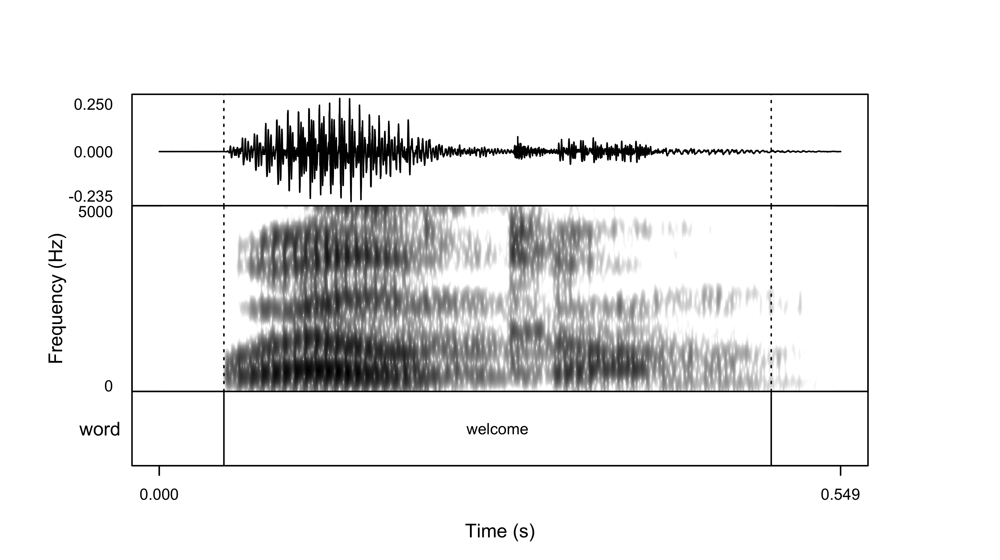

praatpicture(sound = "welcome.wav")

In this post I show how to generate waveform/spectrogram graphics in R.
April 18, 2024
Generating elegant dataviz for spectrogram/waveforms can be cumbersome. Praat has excellent plotting capabilities, but can be rather difficult to teach, especially if you want to plot the waveform/spectrogram/textgrid combination. I posted on the topic a long time ago for a solution in R, and this post is an update of sorts, particularly for those not interested in working in Praat directly.
Rasmus Puggaard-Rode’s fantastic package praatpicture makes the process trivial. Assume we have a wav file called welcome.wav and the corresponding textgrid welcome.TextGrid. We can plot the wavform/spectrogram/textgrid combination with a simple call to praatpicture():
I won’t go through all of the capabilities of the package (the documentation is great), but here are a few of my common use cases.
praatpicture(
sound = "welcome.wav",
spec_freqRange = c(0, 4900),
frames = c('sound', 'spectrogram', 'TextGrid'),
formant_plotOnSpec = TRUE,
formant_color = '#cc0033'
)praatpicture(
sound = "welcome.wav",
spec_freqRange = c(0, 4900),
frames = c('spectrogram'),
spec_color = c(
'darkblue', 'blue', 'cyan', 'yellow', 'orange', 'brown', '#cc0033')
)praatpicture(
sound = "welcome.wav",
spec_freqRange = c(0, 4900),
frames = 'spectrogram',
spec_color = c("white", scales::pal_brewer(palette = "Reds")(9))
)praatpicture(
sound = "welcome.wav",
spec_freqRange = c(0, 4900),
frames = 'spectrogram',
spec_color = c(viridis::viridis_pal(option = "B")(8), "#cc0033")
)This document was written in quarto.
Session info
setting value
version R version 4.3.1 (2023-06-16)
os macOS Sonoma 14.1
system aarch64, darwin20
ui X11
language (EN)
collate en_US.UTF-8
ctype en_US.UTF-8
tz America/New_York
date 2024-04-18
pandoc 3.1.1 @ /Applications/RStudio.app/Contents/Resources/app/quarto/bin/tools/ (via rmarkdown) loadedversion date
bit 4.0.5 2022-11-15
bit64 4.0.5 2020-08-30
cachem 1.0.8 2023-05-01
cli 3.6.2 2023-12-11
colorspace 2.1-0 2023-01-23
crayon 1.5.2 2022-09-29
devtools 2.4.5 2022-10-11
digest 0.6.35 2024-03-11
dplyr 1.1.4 2023-11-17
ellipsis 0.3.2 2021-04-29
evaluate 0.23 2023-11-01
fansi 1.0.6 2023-12-08
fastmap 1.1.1 2023-02-24
fs 1.6.3 2023-07-20
generics 0.1.3 2022-07-05
ggplot2 3.5.0 2024-02-23
glue 1.7.0 2024-01-09
gridExtra 2.3 2017-09-09
gtable 0.3.4 2023-08-21
here 1.0.1 2020-12-13
hms 1.1.3 2023-03-21
htmltools 0.5.7 2023-11-03
htmlwidgets 1.6.4 2023-12-06
httpuv 1.6.14 2024-01-26
jsonlite 1.8.8 2023-12-04
knitr 1.45 2023-10-30
later 1.3.2 2023-12-06
lifecycle 1.0.4 2023-11-07
magrittr 2.0.3 2022-03-30
MASS 7.3-60.0.1 2024-01-13
memoise 2.0.1 2021-11-26
mime 0.12 2021-09-28
miniUI 0.1.1.1 2018-05-18
munsell 0.5.0 2018-06-12
phonTools 0.2-2.2 2023-11-20
pillar 1.9.0 2023-03-22
pkgbuild 1.4.3 2023-12-10
pkgconfig 2.0.3 2019-09-22
pkgload 1.3.4 2024-01-16
praatpicture 1.0.0 2024-03-07
profvis 0.3.8 2023-05-02
promises 1.2.1 2023-08-10
purrr 1.0.2 2023-08-10
R6 2.5.1 2021-08-19
RColorBrewer 1.1-3 2022-04-03
Rcpp 1.0.12 2024-01-09
readr 2.1.5 2024-01-10
remotes 2.4.2.1 2023-07-18
rlang 1.1.3 2024-01-10
rmarkdown 2.26 2024-03-05
rPraat 1.3.2-1 2021-02-27
rprojroot 2.0.4 2023-11-05
rstudioapi 0.16.0 2024-03-24
scales 1.3.0 2023-11-28
sessioninfo 1.2.2 2021-12-06
shiny 1.8.0 2023-11-17
signal 1.8-0 2023-11-27
stringi 1.8.3 2023-12-11
stringr 1.5.1 2023-11-14
tibble 3.2.1 2023-03-20
tidyselect 1.2.1 2024-03-11
tuneR 1.4.6 2023-11-27
tzdb 0.4.0 2023-05-12
urlchecker 1.0.1 2021-11-30
usethis 2.2.3 2024-02-19
utf8 1.2.4 2023-10-22
vctrs 0.6.5 2023-12-01
viridis 0.6.5 2024-01-29
viridisLite 0.4.2 2023-05-02
vroom 1.6.5 2023-12-05
wrassp 1.0.5 2024-01-09
xfun 0.42 2024-02-08
xtable 1.8-4 2019-04-21
yaml 2.3.8 2023-12-11